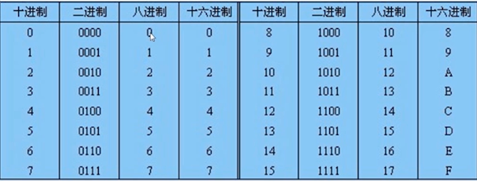
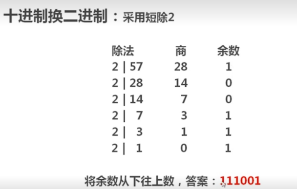
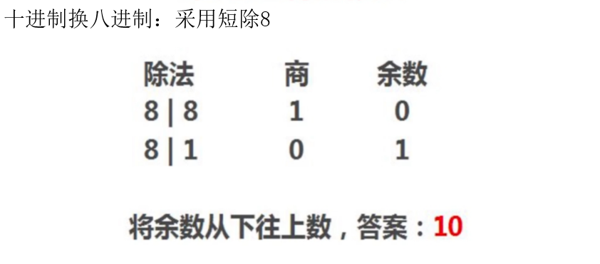
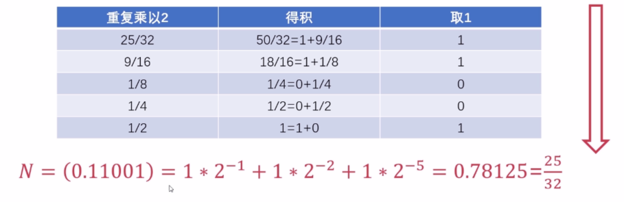
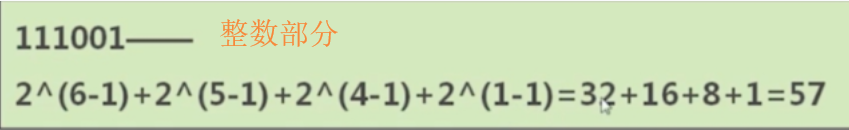
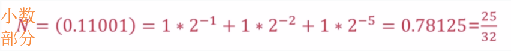
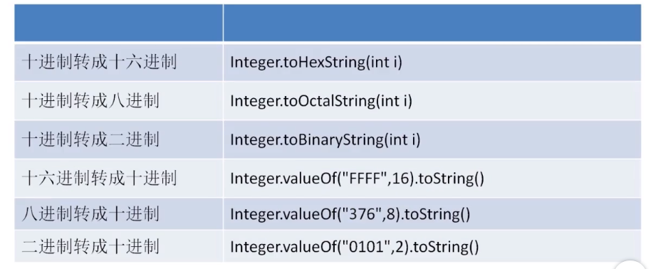
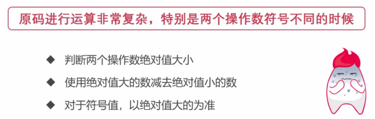

1.进制
①进制相关
- 在线进制转换工具：https://tool.lu/hexconvert/
- 进位制是一种记数方式，亦称进位计数法或位值计数法。它是人们为计数和运算方便而约定的计数系统。
- 把一个数表示成 a 与 10 的 n 次幂相乘的形式（1 ≤ |a| < 10，n 为整数），这种记数的方法叫做科学记数法。
- 使用的数字符号的数目称为这种进位制的基数或底数。
- 位权：一个数码在不同的位置上所代表的值不同、且不同的进位制，处于同一数位上的权也是不同的。
- 例如：十进制第 2 位的位权为 10，第 3 位的位权为 100、而二进制第 2 位的位权为 2，第 3 位的位权为 4。
②进制转换
| 进位制 | 基本数字 | 进位规则 | 应用 | 标志的开头 |
|---|---|---|---|---|
| 二进制 | 0 ~ 1 | 二进一 | 计算机内部采用二进制，其运算简单，简化了计算机结构 | 0b / 0B |
| 八进制 | 0 ~ 7 | 八进一 | 适用于12位和36位计算机系统 | 0 |
| 十进制 | 0 ~ 9 | 十进一 | 日常生活中使用 | 无 |
| 十六进制 | 0 ~ 9和A、B、C、D、E、F(15) | 十六进一 | 长度短 | 0x / 0X |
- 进制表：

- 十进制转换为 二 / 八 / 十六 进制
- 对于整数：采用重复相除权再倒看余数的方法
- 对于小数：采用重复相乘权再正看 “余数” 的方法



- 二 / 八 / 十六进制采用科学计数法按对应权展开可得十进制数：


③JDK 内置的进制转换

1 | package object.base; |
2.二进制数据的表示方法
ps：Java 中整型（int型）是 32 位的。
①原码
- 原码表示法：最高位为符号位，其余位表示数值的大小。
- 使用 0 表示正数、1 表示负数
- [+1]原 = 0000 0001
- [-1]原 = 1000 0001
- 优点：表达简单明了、易于理解
- 缺点：
- 有歧义（0 既可以用 00 表示，也可以用 10 表示）
- 当两个操作数的符号不同时，运算十分复杂

②反码
- 正数的反码是其本身
- [+1] = [00000001]原 = [00000001]反
- 负数的反码等于原码除符号位外按位取反
- [-1] = [10000001]原 = [11111110]反
③补码
- 正数的补码是其本身
- [+1] = [00000001]原 = [00000001]反 = [00000001]补
- 负数的补码等于反码加 1
- [-1] = [10000001]原 = [11111110]反 = [11111111]补
④原码、补码和反码之间的关系
- 因为原码表示法对于零的表示有歧义且其减法运算复杂，所以引入了补码表示法。虽然补码表示法在一定程度上解决了这两个问题，但是其在计算补码的过程中引进了减法操作。
- 解决方法：引进反码表示法。先由原码计算出反码，再由反码计算出补码，即可消除直接通过原码求补码时引入的减法操作。
- 在计算机中，数据都是以补码的形式存储的。
- 0 的反码和补码都为零
3.位运算
ps：程序中所有的数在内存中都是以二进制的形式存储的，位运算是直接对二进制位进行的位操作。
二进制位运算的优点：计算方便，速度快，被支持面广。
①运算符
| 运算 | 功能 | 举例 | 应用/规律 |
|---|---|---|---|
| 按位与(&) | 两位全为1，结果才为1 | 6(00000110) & 3(00000011) = 2(00000010) | a.清零(若要将一个单元清零，只要与一个各位都为0的数值相与即可) b.取一个数中的指定位(找一个数，对应x要取的位，该数的对应位为1，其余位为0，此数与x进行与运算即可得到x中的指定位) |
| 按位或(|) | 只要有一个为1，结果就为1 | 6(00000110) | 3(00000011) = 7(00000111) | 用来对一个数据的某些位置1(找一个数，对应x要置1的位，该数的对应位为1，其余位为0，此数与x进行或运算即可使x中的某些位置1) |
| 异或运算(^) | 两个相应位为”异”，则该位结果为1，否则为0 | 6(00000110) ^ 3(00000011) = 5(00000101) | a.与0相异或，可保留原值 b.使特定位翻转(找一个数，对应x要翻转的位，该数的对应位为1，其余位为0，此数与x对应位异或即可) |
| 取反运算(~) | 对一个二进制数按位取反，0变1，1变0 | ~6(00000110) = -7(11111001) | 补码(11111001)-1 -> 得到反码(11111000)，除符号位外各位取反 -> 得到原码-7(10000111) |
| 左移运算(<<) | 将一个数的各二进制位全部左移指定的位数，右边补0 | 3(00000011) << 2 = 12(00001100) | 若左移时舍弃的高位不包含1，则每左移一位，相当于该数乘以2 |
| 右移运算(>>) | 将一个数的各二进制位全部右移指定的位数，正数左补0，负数左补1 | 3(00000011) >> 1 = 1(00000001) | 若操作数为正数，则每右移一位，相当于该数除以2 |
| 无符号右移运算(>>>) | 将一个数的各二进制位全部右移指定的位数，左边补0 | 3(00000011) >>> 1 = 1(00000001) | 若操作数为正数，则每右移一位，相当于该数除以2 |
②两个变量交换值的方法
- 利用临时变量来实现两个变量的交换
- 步骤：C = A、A = B、B = C
- 利用加减法来实现两个变量的交换
- 步骤：A = A + B、B = A - B、A = A - B
- 利用位异或运算来实现两个变量的交换（效率最高）
- 原理：利用一个数异或本身等于 0 、与 0 异或保留原值和异或运算符合交换律
- 步骤：A = A ^ B、B = A ^ B、A = A ^ B
附录
- 我的个人博客：messi1002.top
- 如有错误或疑惑之处 请联系 wjymessi@163.com